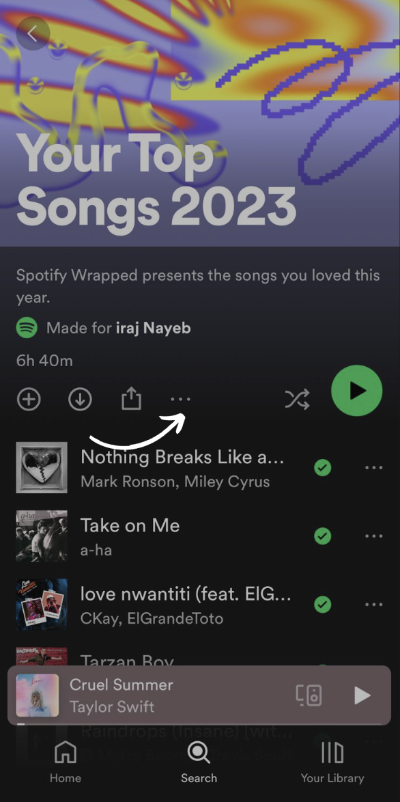
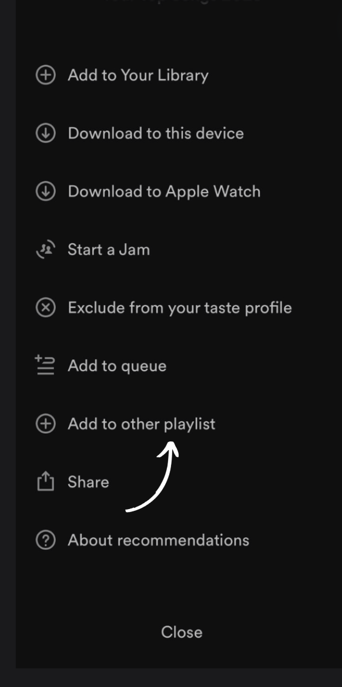
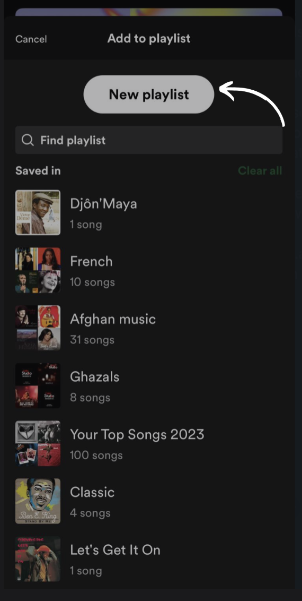
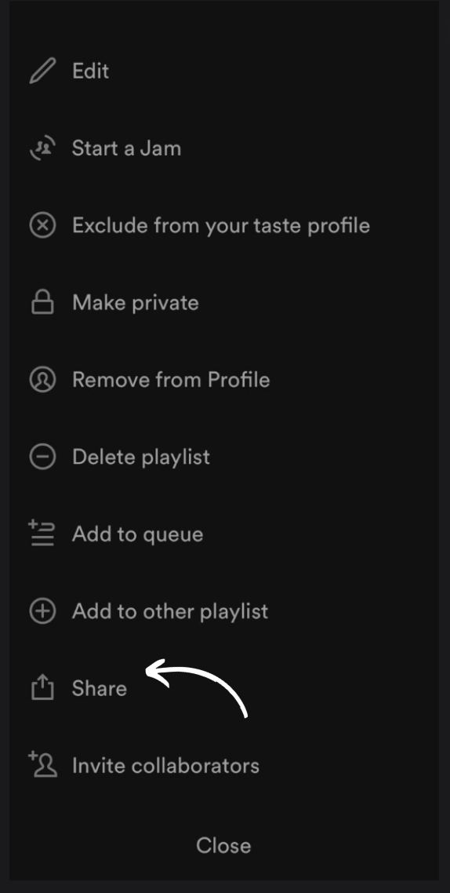

Our recommendation system performs an algorithmic analysis of the nature of songs in your favourite playlist and determines your music taste. You then select a genre that you would wish to explore and the system recommends you songs based on the music you have previously liked. If you are not a big fan of creating personal playlists you can simply make your Spotify Wrapped public by duplicating it and pasting it below. Here are the steps for duplicating your Spotify wrapped:
Go to Spotify Wrapped.
Click on the three dots.
Click on 'Add to playlist'.
Select 'Create New Playlist'.
Copy the link.
